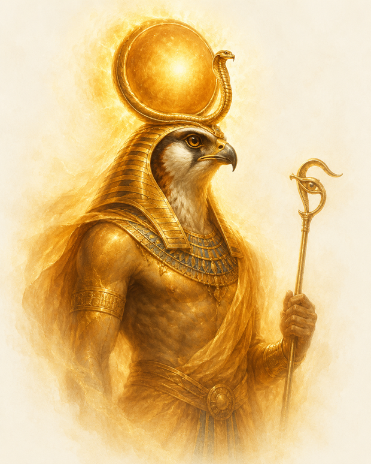
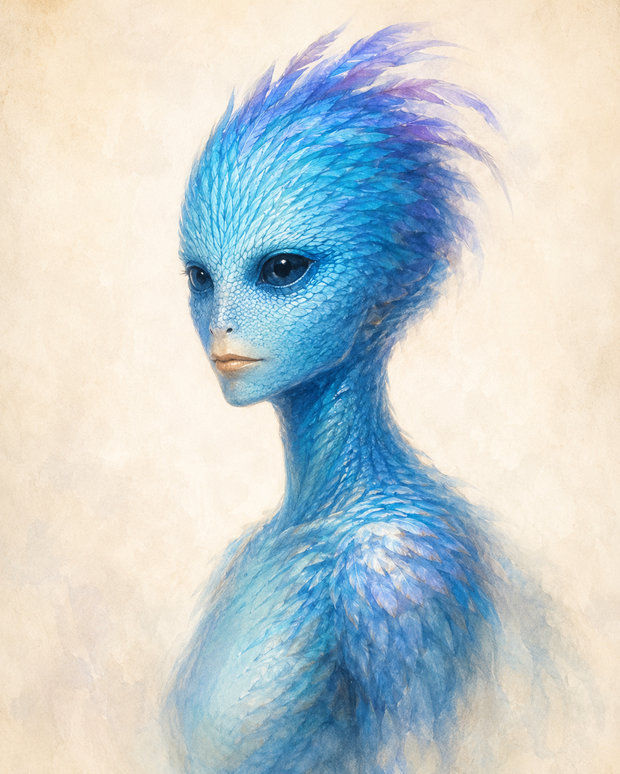

主 題 重 讀 版
一的法則
The Law of One · The Ra Material
把分散在 106 場集會、一問一答的內容,按主題重新整理成可以順讀的一本書
這套教材原本是 1981–1984 年間、橫跨
106 場集會
的通靈問答,同一個主題往往被切成許多段、散落在不同集會裡,讀起來很吃力。 這個版本把它
按主題重新收攏
:每一章用順暢的白話講清楚一個主題,名詞順手解釋、前後脈絡接起來; 另外完整保留
原文對照本
,讀到哪、想查證原句時,點一下就能跳到對應集會。
📖 原文對照本(全 106 場)
第 一 部
根本原理
先把整套教材的核心前提與世界觀建立起來。
1
一的法則
萬物為一 · 無限造物者
可閱讀
2
最初的思維
造物的起點與本源
可閱讀
3
宇宙論
Logos、自由意志、造物的計畫
可閱讀
4
名詞解釋
器皿、催化劑、複合體…術語白話查詢
可閱讀
第 二 部
演化的架構
意識如何一階一階往上走,以及我們現在站在哪裡。
5
七個密度
從混沌到合一的七階旅程
可閱讀
6
第三密度:我們的當下
人類所在 · 抉擇的舞台
可閱讀
7
收割與畢業
密度之間的過渡與條件
可閱讀
8
時間/空間
兩種存在面向、轉世之間
可閱讀
第 三 部
抉擇與兩條道路
第三密度的核心功課:選擇服務他人,或服務自己。
9
抉擇 · 兩條道路
兩極化為何是關鍵
可閱讀
10
服務他人(正向道路)
以愛與奉獻極化
可閱讀
11
服務自己(負向道路)
獵戶座 · 控制與分離
可閱讀
12
平衡
平衡催化劑與能量中心
可閱讀
第 四 部
人的構造與修行
能量中心、心智的原型,以及各種成長與療癒的途徑。
13
能量中心(脈輪)
紅到紫的七個中心
可閱讀
14
原型心智
21 個原型 · 塔羅
可閱讀
15
高我
第六密度的自我引導
可閱讀
16
冥想
靜默 · 接觸智能無限
可閱讀
17
療癒
心/身/靈三重療癒
可閱讀
18
性能量轉移
能量交換與綠光
可閱讀
19
白魔法
儀式 · 意志與信心
可閱讀
20
面紗之前
遺忘屏障的設計與意義
可閱讀
第 五 部
地球與宇宙的故事
行星聯邦、流浪者、地球的過去與現在。
21
行星聯邦
服務他人的星際存有
可閱讀
22
流浪者
轉生地球協助的高密度存有
可閱讀
23
地球歷史
火星、馬爾戴克、亞特蘭提斯
可閱讀
24
地球現況
當前的過渡與挑戰
可閱讀
25
金字塔
建造目的與療癒用途
可閱讀
26
Ra 是誰
傳訊者的來歷與接觸
可閱讀
↑